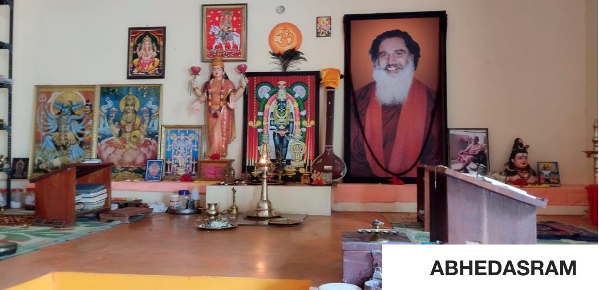

Hi,üëã
We speak your language feel free to contact us


Dr. Biju Ananthakrishnan was born on 30th May 1971 , at Kurathikad, Mavelikkara, Alappuzha District, Kerala as the younger son of Shri. Ananthakrishna Pillai and late Mrs Kamalammal. He has a daughter named Sai Lekshmi. Biju Ananthakrishnan hails from a family of musicians, his father Shri. Ananthakrishna Bhagavathar was a Carnatic musician and harmonist and his Grandfather, Shri. Kurathikad Parameswaran Pillai Ashan was also an excellent musician. Ashan's younger brother, Oachira Velukkutty is considered one of the pioneers of the Malayalam music and Drama field.
Dr.Biju Ananthakrishnan began his musical journey with one of the most talented artists, Sangeethacharya Guru Shri. Kandiyoor Ayyappan Bhagavathar and the great musician Dr Nadarajapillai where he expertized Carnatic Music. He also learned Hindusthani Music (Sangeeta Visarad) from Prof. Manohar Keshkar, Tansen Sursangh, Trivandrum and Western Classical Music from Shri Jacob Idicula at Singing String Western Music Academy. He is also skilful in Piano, Keyboard, Harmonium (Hindustani/Carnatic), Guitar, Tabla and Mridangam.


Biju Ananthakrishnan has recreated the history in Indian classical Music by conducting a 12-hour musical concert by chanting more than 300 Ragas at a stretch in KPAC – Kayamkulam (on 28th September 2010) and “Swarasallapam” a 24-hour program (22 April to 23 April 2012) by singing classical swaras throughout the program in Abheda Asramam, East fort, Thiruvananthapuram.
For his great talents, Samastha Hindu Vikasa Parishad honoured him by giving "Sanathana Sangeetha Kala Rathnam" in 2000-2001, Varanapally Mahadeva Temple awarded him "Ragasree" in 2012. "Basava Sangeetha Shree Accolade" from Basava Samhithi, Karnataka in 2013. Neeravil Bhadrakali temple honoured by giving the "Swarachaithanya Award" in 2013. "Swathanthrya Sangama Yathra Puraskaaram" from KDBCF in 2013. He also got "Prasasthi Pathram" for his outstanding achievements in music from the Purogamana Kala Sahithya Sangham in 2013. "Shaiva Sangeetha Varamin Award" from Sree Basaveswara Arts Foundation in 2014. Subhandha Guru Karma Seva Samithi honoured by giving Guru Prasadam in 2014. "The Basava Sangeetha Sree Award" from Banglore National Basava Samithi in 2013-2014. "The Best Music Director Award" from Viswa Darsini Films. "Uma Maheswara Keerthimudra Puraskaram" from Kurakkavu temple trust and Aiswarya Creations. "Mandala Pooja Makaravilakku Puraskkaram" from Arsha Dharma Parishad, New Delhi in 2018.
On 01/06/2019 International Pea‌ce University, Germany has graded him with the honorary Doctorate for his 35 years of service to the arts and for his comprehensive contributions to the formation of the branch of music called Music Meditation.

Music Meditation which is blended with all these Indian bequests like Yoga, Meditation, Naturopathy, Carnatic, Hindustani & Western Music is totally devoted to opera. He states "Music Meditation is a permanent propitiation for living style diseases like Anxiety, Stiffness, Tension, Despair, Cowardice, Rage, Stress, Migraine and likewise 50% disorders".
Hence music as a gift from God; Dr Biju proved that, along with enjoyment, music is also a relief and relaxation remedy. Now he is devising to set up meditation centres in India and abroad.
Dr. Biju Ananthakrishnan has composed and Sung many, many devotional Songs about the deities who reside in the great temples of oachira, Kodungallur, Chettikulangara, mandakkad, Vettikode, Harippad, Kurakkavu, Kattil mekkathil and Sabarimala The Visual Created by mr.saji K Pillai it was produced SK cine home and Aiswarya creations.